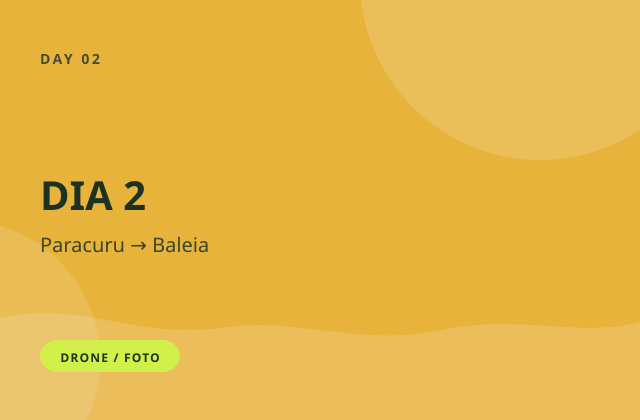
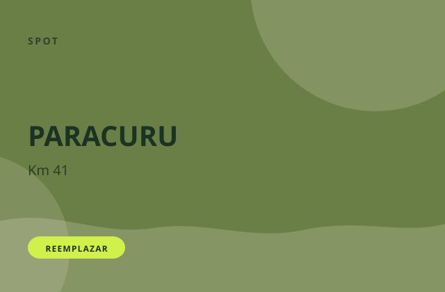
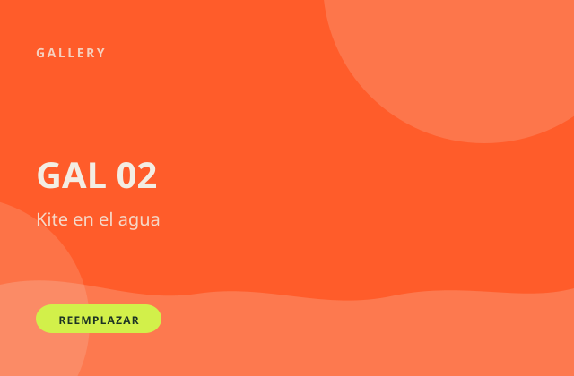
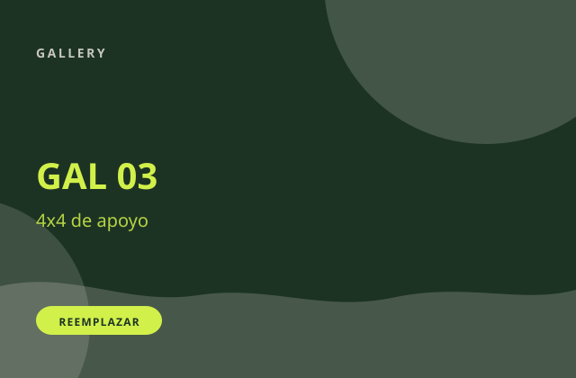
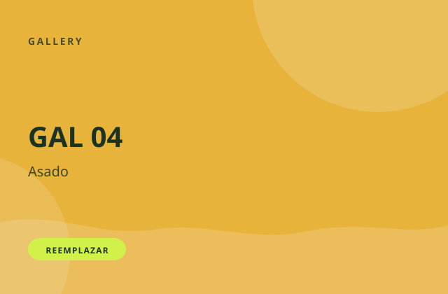
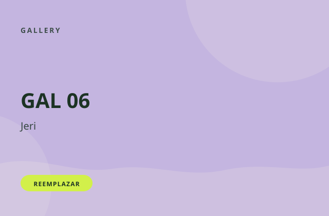
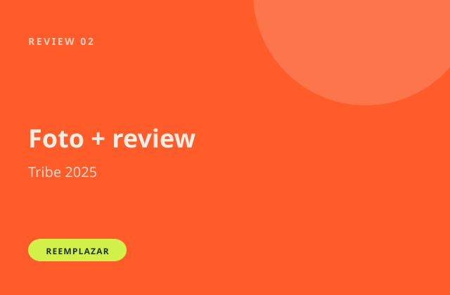

Octubre
6–10 oct 2026
5 días · 242 km
Quiero octubreIndiana Kite Tribe
Cinco días de downwind, Cumbuco a Jeri. Capitán en el agua, dos guías, dos 4x4. Briefing cada mañana. Si no llegás al punto, seguís en el auto.

Recorrido
Cada mañana se arma el día: viento, marea, dónde se sale y dónde se cierra. Si el tramo se te hace largo, el 4x4 te espera. El grupo no se parte en el agua.
Octubre
5 días · 242 km
Quiero octubreNoviembre
5 días · 242 km
Quiero noviembreDía 1
Salís de la playa de Indiana y recorrés la costa hasta Paracuru. Primer día para acomodar ritmo y grupo.
Noche: asado incluido.

ReemplazarDía 2
El tramo más largo. Marea y luz a favor, pero pide piernas y cabeza.
Noche libre en Baleia.
Día 3
Costa más abierta. Mismo esquema: briefing, agua, apoyo en tierra.
Noche: peixe na brasa incluido.
Día 4
El día corto. Sirve para llegar enteros al cierre.
Noche libre en Arpoeiras.
Día 5
Entrás a Jericoacoara. Después, vuelta a Cumbuco. Día y hora se confirman en el trip.
Noche libre en Jeri.
Spots y posadas
Salís de Indiana Kite Hostel. Las cinco noches del downwind son posadas a lo largo de la costa. Los nombres 2026 todavía no están cerrados.

ReemplazarKm 0 · salida
Indiana Kite Hostel
Base. Acá se sale.
SalidaKm 41 · noche 1
Posada a confirmar
Día 1, 41 km. Noche de asado.
Asado incluidoKm 106 · noche 2
Posada a confirmar
Día 2, 65 km. El más largo. Cena por tu cuenta.
Cena libreKm 158 · noche 3
Posada a confirmar
Día 3, 52 km. Peixe na brasa.
Peixe incluidoKm 190 · noche 4
Posada a confirmar
Día 4, 32 km. Día corto. Cena por tu cuenta.
Cena libreKm 242 · noche 5
Posada a confirmar
Día 5, 52 km. Cierre. Vuelta a Cumbuco después.
Cena libreQué incluye
Agua, tierra, cama y comida de día. El precio 2026 todavía no está cerrado. Abajo va el de 2025, para tener una referencia.
Lista 2025. Algunos ítems pueden cambiar.
Galería
Reemplazar

Reemplazar
Reemplazar
Reemplazar
ReemplazarReviews
Tres voces de trips anteriores. Faltan foto y texto reales: no inventamos comentarios.

Reemplazar[Testimonio 1]
Nombre · Tribe 2025
[Testimonio 2]
Nombre · Tribe 2025
[Testimonio 3]
Nombre · Tribe 2025
Nivel y preguntas
Intermedio o más. Mínimo 30 km de downwind previo. Si estás en el límite, preguntá: mejor ahora que en el km 40.
Seguís en el 4x4. El grupo no espera en el agua. Así se cuida a todos.
Limitados. El número 2026 todavía no está cerrado. WhatsApp es el canal.
La base habla español y portugués. Inglés, según quién se sume.
Todavía no está cerrado para 2026. Si necesitás rental, decilo en el WhatsApp.
La vuelta está incluida. Día y hora se confirman en el briefing.
El paquete incluye fotos y video. Si hay filmmaker en el agua los cinco días, o material del equipo, lo confirmamos por WhatsApp.
Elegí octubre o noviembre. O escribí si todavía no sabés.